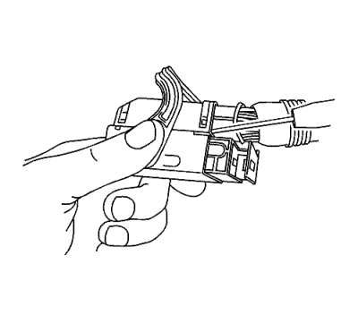
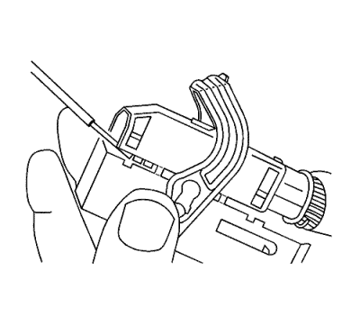
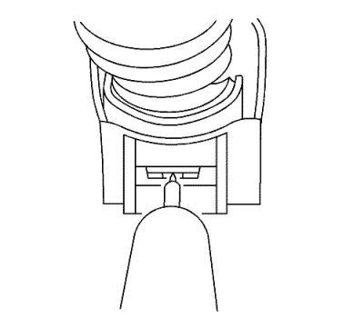
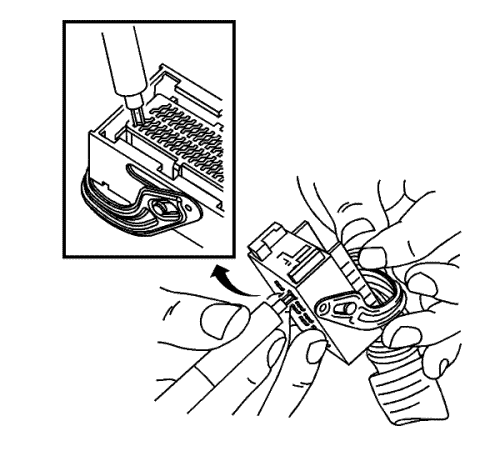
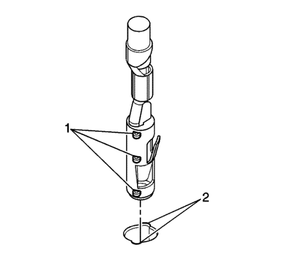

Conectores Bosch — 0.64
Herramientas especiales
| • | EL-38125-580 Juego de herramientas de liberación de terminales |
| • | J-38125-560 Herramienta de desbloqueo de terminales |
Si desea informarse sobre herramientas regionales equivalentes, consultar Herramientas especiales .
Procedimiento de extracción de terminales
- Sitúe el bloqueo de la palanca en la tapa del cable. Mientras presiona el bloqueo, tire de la palanca pasado el bloqueo hasta que la palanca llegue al final de su recorrido.
- Separe el conector del componente.
- Arrastre hacia atrás la funda de goma que cubre los cables para dejar al descubierto el extremo de la tapa del conector.
- Coloque la palanca de bloqueo del conector en el centro del conector.

- Sitúe las 2 lengüetas de bloqueo de la tapa que están en el extremo de cable del conector. Introduzca una herramienta pequeña de punta plana entre la tapa y el cuerpo del conector y levante.

- Coloque las 2 lengüetas de bloqueo de la tapa situadas en el lado opuesto del conector. Introduzca una herramienta pequeña de punta plana entre la tapa en el extremo del conector y levante.
- Extraiga la tapa.
- Corte la envoltura de sujeción en el mazo de cables.

- Extraiga el seguro de posición del terminal (TPA) introduciendo una herramienta pequeña de punta plana en la pequeña ranura del extremo de la corredera y empuje el TPA hasta que salga del conector. Cuando el TPA salga por el lado opuesto del conector, sujete el TPA y arrástrelo totalmente fuera del conector.
- Empuje el lado del cable del terminal que va a extraerse hacia el conector y sujételo en esta posición.

- Introduzca la J-38125-560 en las 2 cavidades triangulares de cada lado del terminal en la parte frontal del conector.
- Tire con cuidado del terminal fuera del conector. Recuerde siempre que nunca debe utilizar la fuerza a la hora de retirar un terminal de un conector. Si resulta difícil extraer el terminal, repita todo el procedimiento.
- Repare el terminal siguiendo el procedimiento Reparaciones del terminal del conector : Reparación de Terminales → Reparación de cable con terminación .
- Vuelva a insertar el terminal reparado en la cavidad. Repita el procedimiento de diagnóstico para verificar la reparación y vuelva a conectar los cuerpos de los conectores.
Procedimiento de inserción de terminales

- Antes del montaje, el terminal debe estar alineado de modo que los salientes de encastre de codificación (1) estén alineados con las ranuras de codificación (2) en el conector.
- Una vez que el terminal esté alineado, deslice el terminal en la cavidad hasta que el retén se haya acoplado en la cavidad del conector.
- Deslice el TPA en el cuerpo del conector y encástrelo utilizando una herramienta pequeña de punta plana. El TPA está encastrado cuando queda enrasado con la carcasa de contacto.
- Asegure los cables al cuerpo del conector mediante una envoltura de sujeción y sustituya la tapa y la boquilla.
| © Copyright Chevrolet Europe. All rights reserved |